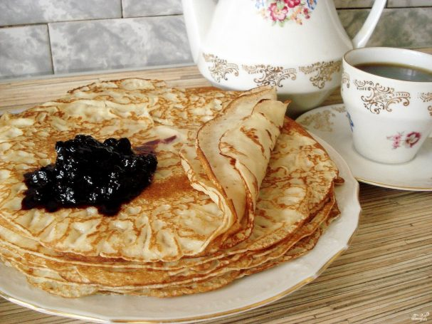

Homepage
Russian Cuisine
Pancakes with Jam
This recipe was given to me by my Russian teacher/neighbor. It is tried and true, and my family loves it! Cooking time really depends on how many skillets you are using! Many years ago when I first started making the blini, I used 1 skillet and it took forever to use up all the batter. Now I use 4 skillets and the time goes by quickly. I have substituted coconut oil and it tastes delicious, but it tends to harden if the batter is cold. Batter can be refrigerated for later use. Serve hot with sour cream and/or jelly.

- Servings:4
- Prep:15 mins
- Cook:30 mins
Total:45 mins
Ingredients
- 2 eggs
- 2 glasses milk
- 2.5 glasses flour
- 3 tablespoons of oil
- 0.5-1 glass boiling water
- 3 tablespoons sugar
- 0.5 teaspoon baking soda
- 0.5 teaspoon salt
Directions
- Prepare and group all the necessary ingredients.
- Whisk the eggs together with sugar, salt and baking soda in a bowl. You can use an egg whisk.
- Add milk and mix everything thoroughly.
- Gradually sift the flour into the mixture. Beat the batter. It should be smooth.
- Next add oil
- Then add some boiling water and mix everything quickly. The batter should resemble thick milk.
- Put the pan on the hob and heat some oil. To get thin pancakes, do not fill the ladle with batter to the top. Fry on both sides.
- Fry until pancakes will get golden surface
- Serve the pancakes with jam. Enjoy!
Nutrition facts
Calories:522
- Protein 16g;
- Carbs 64.3g;
- Fat 22.2g
Check also this
Okroshka